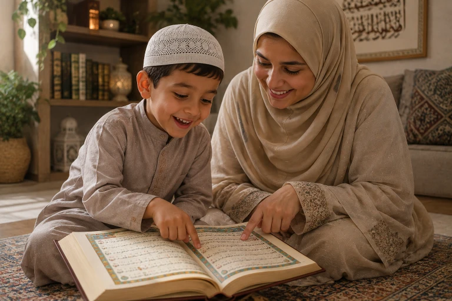
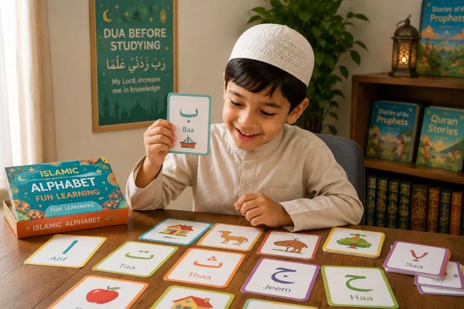

Every Muslim parent dreams of the day their child will hold the Mushaf, recite the words of Allah beautifully, and carry the Quran in their heart forever. But for many parents, the journey of teaching the Quran turns into a daily battlefield of tears, frustration, and power struggles. If your child groans when it's "Quran time," you are not alone. The good news? Learning the Quran doesn't have to be a chore. In this comprehensive guide, we will explore 7 fun, effective, and Islamically grounded methods to make Quran learning an enjoyable and lifelong journey for your kids.
In This Complete Guide, You'll Learn:
- Why children resist Quran learning (and the psychological fix for it)
- 7 practical, gamified methods to make Arabic letters and Tajweed fun
- How to use technology and apps wisely without causing screen addiction
- The art of positive reinforcement: rewarding without bribing
- How to connect the Quran to their daily life so it feels relevant
- Common mistakes parents make that kill a child's love for the Quran
Key Takeaways
- Connection before correction: Build love for the Quran before enforcing rules.
- Keep sessions short and sweet; consistency beats marathon sessions.
- Gamify the learning process to engage their natural curiosity.
- Never use the Quran as a punishment or a source of shame.
- Be the role model; let them see YOU finding peace in the Quran.

📑 In This Article
Why Kids Resist Quran (And How to Fix It)
Before we dive into games and tricks, we must understand the root cause of the resistance. Children do not naturally hate the Quran; they hate the stress associated with it. If every Quran session ends with yelling, frustration, or boredom, their brain wires the Quran to "pain."
Furthermore, Arabic is a complex language. For a 5-year-old, distinguishing between 'Ba' (ب) and 'Ta' (ت) can be genuinely confusing. When they feel confused and we react with impatience, they shut down.
Shift the goal. The primary goal for children under 7 is not "finishing the Qaida"; the primary goal is loving the Book of Allah. If they finish the Qaida but hate the Quran, we have failed. If they love the Quran but take two years to finish the Qaida, we have succeeded.
Start with Love, Not Letters
Long before you sit them down with a Qaida (primer), immerse them in the beauty of the Quran.
- Play it in the background: Play beautiful, soothing recitations (like Mishary Rashid Alafasy or Abdul Basit) in the car or during breakfast.
- Tell Quranic Stories: Read children's books about the Prophets. Let them fall in love with Prophet Yusuf (AS), Prophet Musa (AS), and Prophet Muhammad (PBUH) before they learn to read their words.
- Explain the "Why": Tell them, "The Quran is a letter from Allah to us. When we read it, we are listening to Allah talk to us!"
The Prophet (PBUH) said: "Read the Quran, for it will come as an intercessor for its reciters on the Day of Resurrection."
— Sahih Muslim 804Gamify the Learning Process
Children learn best when they are playing. Turn Quran time into game time.
1. The Arabic Letter Scavenger Hunt
Hide magnetic Arabic letters around the living room. Say, "Find the letter 'Meem' (م)!" When they find it, celebrate wildly.
2. Quran Bingo
Create simple Bingo cards with Arabic letters or short Surah names. Call out a letter, and let them mark it. The first to get a line wins a small prize (like choosing the dinner menu).
3. The "Teacher" Game
Let your child be the teacher. Give them a small whiteboard and let them "teach" their stuffed animals or younger siblings the letters they just learned. Teaching reinforces their own learning and builds confidence.

Use Technology Wisely (Apps & Videos)
We live in a digital age. Instead of fighting screens, use them as tools for good. There are fantastic, ad-free apps designed specifically to make Quran learning interactive.
Recommended Tools:
- Quran for Kids (by Greentech Apps): Offers interactive games and beautiful recitations.
- Noor Kids: Excellent animated videos that teach Islamic values and Quranic stories.
- YouTube Channels: Channels like 'FreeQuranEducation' or 'Omar & Hana' have engaging, high-quality Islamic content.
Never hand them a tablet and walk away. Co-view and co-play. Ask questions: "What letter was that? What did the Sheikh say?" Passive screen time does not equal learning.
Connect Quran to Daily Life
The Quran is not just a book to be read; it is a manual for life. Help your child see its relevance.
- Nature Walks: When you see a beautiful mountain or a vast ocean, say, "SubhanAllah! Allah says in the Quran, 'And the mountains - He established them.' (An-Naba 78:7). Let's look it up when we get home!"
- Emotional Moments: If they are sad, say, "Let's ask Allah for help. Do you know which Surah talks about Allah being close to us? Surah Qaf says, 'We are closer to him than his jugular vein.'"
- Daily Duas: Teach them the short Surahs (Al-Falaq, An-Nas) as protection. "Let's read our 'shield' Surahs before we sleep!"
Celebrate Small Milestones (Positive Reinforcement)
Positive reinforcement is the engine of motivation. But there is a fine line between rewarding and bribing.
How to Reward Effectively:
- Praise the Effort, Not Just the Result: Instead of "Good job for finishing the page," say, "Masha'Allah, I saw how hard you concentrated on that difficult letter today! I am so proud of your effort."
- Use a Sticker Chart: Create a colorful chart. Every day they complete their 15 minutes, they get a sticker. When they fill a row, they get a non-material reward (like a trip to the park, a family movie night, or baking cookies together).
- Make Dua for Them: Let them hear you making dua: "O Allah, make my child's heart attached to Your Book." This spiritual reward is the most powerful of all.
Common Mistakes Parents Must Avoid
Sitting a 5-year-old for 45 minutes is developmentally inappropriate. Keep it to 10-15 minutes. Stop while they are still having fun, so they look forward to the next time.
If they mispronounce a letter, gently correct it once. If they keep making the same mistake, move on and revisit it later in a game. Constant interruption destroys their confidence and flow.
"Look at your cousin, he has already memorized Juz Amma!" Every child has a unique pace. Comparison breeds resentment, not motivation.
Never say, "You were naughty, go read Quran for 20 minutes!" This teaches them that Quran is a penalty for bad behavior. It should always be associated with love and reward.
Frequently Asked Questions
🌱 Start with One Small Change Today
You don't have to overhaul your entire Quran routine overnight. Start with one thing: today, play a beautiful recitation in the car and just listen together, with no pressure to repeat or memorize. Let the words wash over your hearts. May Allah make the Quran the spring of your children's hearts.
What is your biggest struggle with teaching your child Quran? Share below so we can support each other!
Final Thoughts
Teaching your child the Quran is a sacred trust (Amanah) and a profound act of worship. It requires immense patience, creativity, and reliance on Allah. There will be days of breakthrough and days of frustration. On the hard days, remember that you are planting seeds. You may not see the tree today, but Insha'Allah, those seeds will grow into a deep, unshakeable connection with Allah that will protect them in this life and the next. Make lots of dua, be gentle with them, and be gentle with yourself. May Allah make our children among the people of the Quran, those who are His own special people. Ameen.